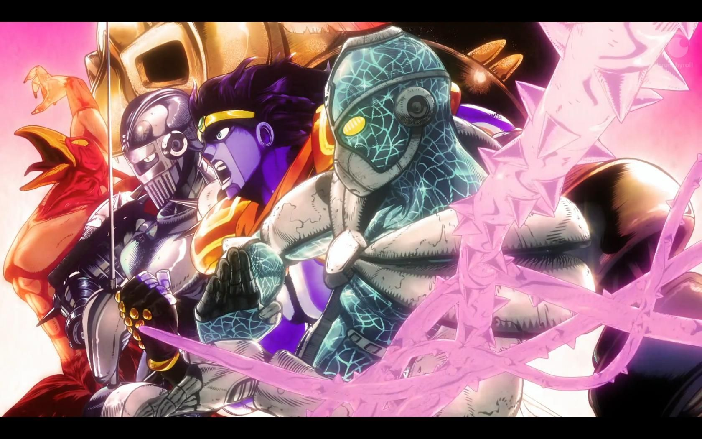

Jojo's Bizarre Adventures is definitely different compared to the other shows that I've shared-definitely not in the slice of life category. In fact, it's title fits the over-arching theme of the story. It truly is a series that continues to get bizarre the more you read it.
Although the beginning of the series can take some time to pick up, once you understand the root of all cause and the powers introduces, it's quite the addicting watch. The creator gave the characters such an interesting power, unique to each character, and you can never truly run out of ideas for powers when it comes to this show. These characters and their powers are mind boggling.
Lastly, the color scheme of the whole show is just jaw dropping gorgeous. It's so trippy but it adds a huge effect to the gravity of the situations the characters find themselves in. And honestly, I just like to look at it becaus eof the colors. Aside from this, the soundtrack for all the seasons is just a masterpiece. And the humor is A1. The memes is another realm I'll refrain from diving into.